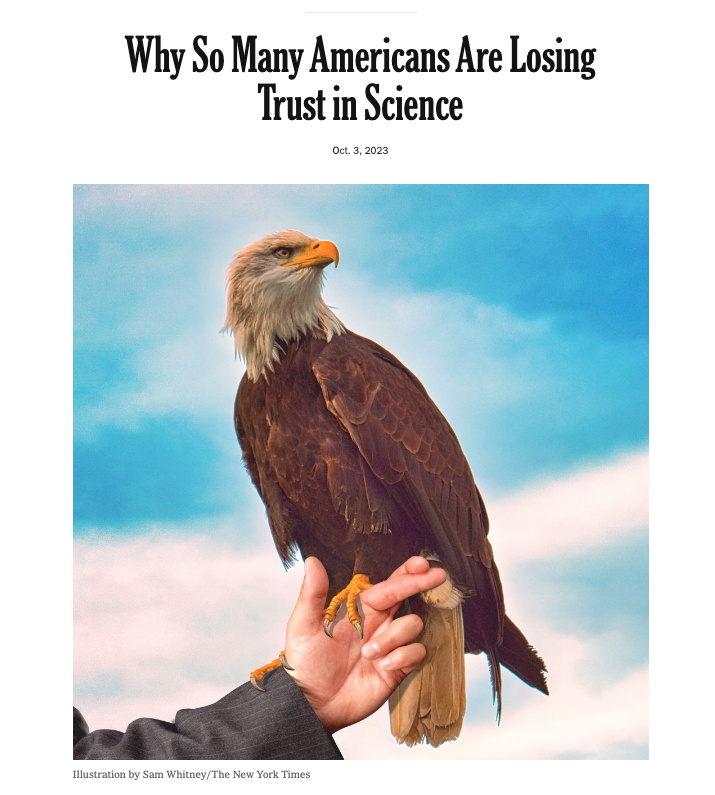

Questionable research practices
2023-10-04 Wed
Overview
In the news…
Announcements
- Due Friday
- Discuss Friday Exercise 04: P-hack your way to scientific glory.
Today
- Read & Discuss
Simmons, J. P., Nelson, L. D. & Simonsohn, U. (2011). False-positive psychology: Undisclosed flexibility in data collection and analysis allows presenting anything as significant. Psychological Science, 22(11), 1359–1366. https://doi.org/10.1177/0956797611417632
Central questions
- What are researcher ‘degrees of freedom’?
- Why should we care about them?
- What are questionable research practices?
- Why should we care about them?
False positives vs. false negatives
- Null hypothesis: There is no effect.
- Positive: What’s actually true, a true fact
- Negative: What’s actually untrue, a false fact
- What does our evidence say?
Decision matrix
| Evidence says | True fact | False fact |
|---|---|---|
| True | True positive | False positive (Type I) |
| False | False negative (Type II) | True negative |
- Goals:
- Minimize false positives (Type I errors) or maximize specificity
- Minimize false negatives (Type II errors) or maximize sensitivity
- What we control
- How to decide based on evidence
- What we don’t control
- What’s true or false (\(p(True fact)\))
Biostatistics version

Practices
- Control alpha
- \(\alpha\)
- a probability or p value
- to make false positive choices very rarely
- Control beta
- \(\beta\)
- to make false negative choices very rarely
- statistical ‘power’ is \(1-\beta\).
Note
\(\alpha\), \(\beta\), \(\gamma\), \(\delta\)…
are letters from the Greek alphabet.
| Evidence says | True fact | False fact |
|---|---|---|
| True | \(1-\beta\) | \(\alpha\) |
| False | \(\beta\) | \(1-\alpha\) |
- If fact is truly true, then our evidence should say so \(1-\beta\) of the time
- If a fact is truly false, our evidence should say so \(1-\alpha\) of the time.
What’s a defensible choice? What’s a questionable practice?
- In a paper, failing to report all of a study’s dependent measures
- Deciding whether to collect more data after looking to see whether the results were significant
- In a paper, failing to report all of a study’s conditions
- Stopping collecting data earlier than planned because one found the result that one had been looking for
- In a paper, “rounding off” a p value (e.g., reporting that a p value of .054 is less than .05)
- In a paper, selectively reporting studies that “worked”
- Deciding whether to exclude data after looking at the impact of doing so on the results
- In a paper, reporting an unexpected finding as having been predicted from the start
- In a paper, claiming that results are unaffected by demographic variables (e.g., gender) when one is actually unsure (or knows that they do)
- Falsifying data
Note
Why might a researcher do these things?
Why might such choices be questionable?
Researcher ‘degrees of freedom’
The culprit is a construct we refer to as researcher degrees of freedom. In the course of collecting and analyzing data, researchers have many decisions to make: Should more data be collected? Should some observations be excluded? Which conditions should be combined and which ones compared? Which control variables should be considered? Should specific measures be combined or transformed or both?
Note
What’s a degree of freedom?
What does it mean in this context?
It is rare, and sometimes impractical, for researchers to make all these decisions beforehand. Rather, it is common (and accepted practice) for researchers to explore various analytic alternatives, to search for a combination that yields “statistical significance,” and to then report only what “worked.”
Note
- Why is it rare for researchers to make these decisions beforehand?
- Why is it impractical?
- What (relatively new) practice involves making many of these decisions in advance? Hint.
The problem, of course, is that the likelihood of at least one (of many) analyses producing a falsely positive finding at the 5% level is necessarily greater than 5%.
This exploratory behavior is not the by-product of malicious intent, but rather the result of two factors: (a) ambiguity in how best to make these decisions and (b) the researcher’s desire to find a statistically significant result.
Note
What did (Feynman, 1974) say about when scientists should bend over backwards and why?
Richard Feynmann

…a specific, extra type of integrity that is not lying, but bending over backwards to show how you’re maybe wrong, that you ought to do when acting as a scientist. And this is our responsibility as scientists…and I think to laymen.
Richard Feynmann
The first principle is that you must not fool yourself—and you are the easiest person to fool. So you have to be very careful about that. After you’ve not fooled yourself, it’s easy not to fool other scientists…
Choices to be made…
- Choosing dependent measure or measures
- Choosing sample size
- Stopping early
- Choosing covariates
- Reporting subsets of conditions
- Trimming data (e.g., how to treat outliers)
What’s “too fast” for reaction time?
In a perusal of roughly 30 Psychological Science articles, we discovered considerable inconsistency in, and hence considerable ambiguity about, this decision. Most (but not all) researchers excluded some responses for being too fast, but what constituted “too fast” varied enormously: the fastest 2.5%, or faster than 2 standard deviations from the mean, or faster than 100 or 150 or 200 or 300 ms.
Similarly, what constituted “too slow” varied enormously: the slowest 2.5% or 10%, or 2 or 2.5 or 3 standard deviations slower than the mean, or 1.5 standard deviations slower from that condition’s mean, or slower than 1,000 or 1,200 or 1,500 or 2,000 or 3,000 or 5,000 ms. None of these decisions is necessarily incorrect, but that fact makes any of them justifiable and hence potential fodder for self-serving justifications.
Note
When we “trim outliers” from our data what assumption(s) are we making?
When are those assumptions justified and when might they not be?
Next time
More on QRPs
- Due
- More on questionable research practices (QRPs)
- Discuss (Simmons et al., 2011)
- (Brief) Work session
- Set-up for discussion of p-hacking exercise on Monday.
- (Optional) Work session
- Final project proposals, due Friday, October 13.
Resources
References
PSYCH 490.009: 2023-10-04 Wed